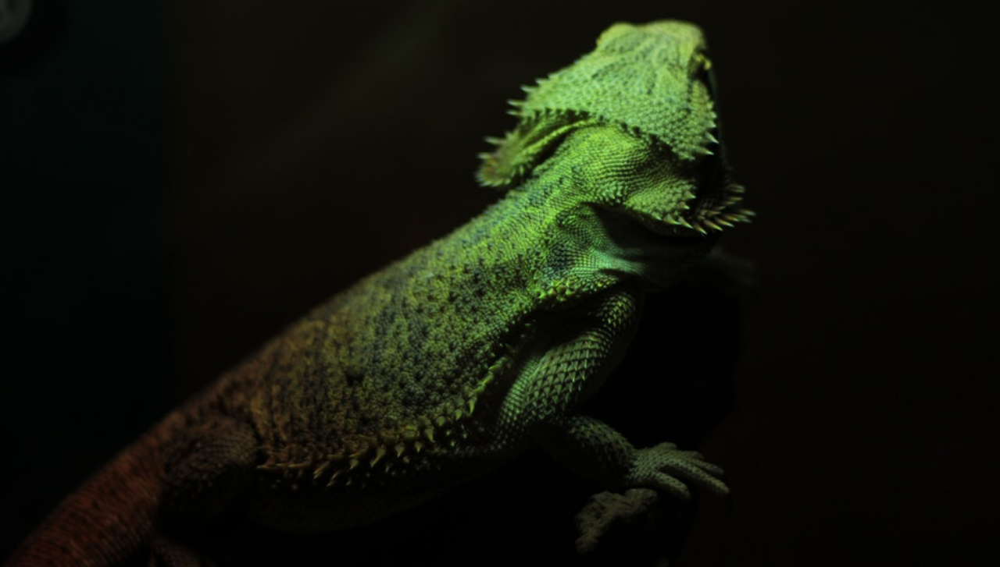
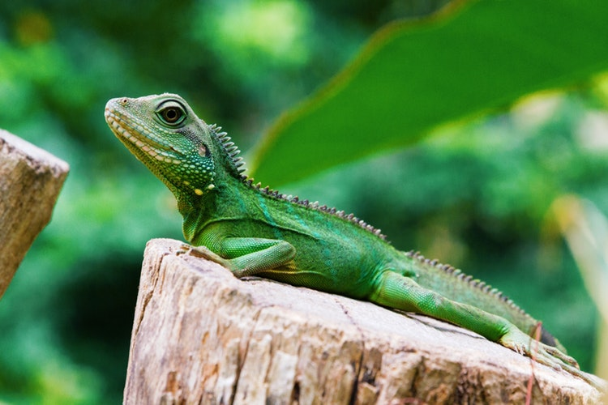
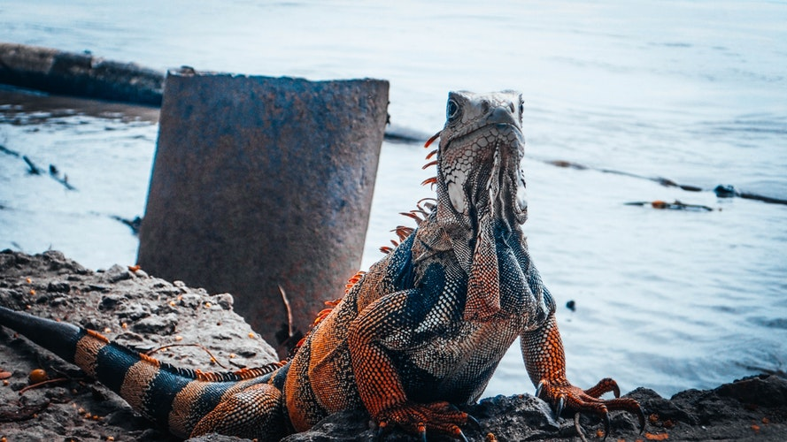
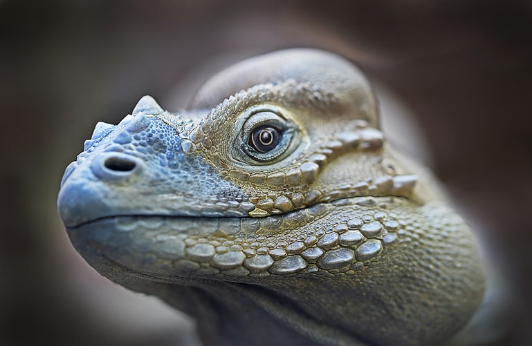

Las iguanas son un grupo de reptiles de la familia Iguanidae. Son conocidas por su piel escamosa, su cresta dorsal y su capacidad para cambiar de color. Habitan principalmente en regiones tropicales y subtropicales, adaptándose a diversos entornos, desde selvas hasta zonas áridas y costeras.
Son herbívoras en su mayoría, con una dieta basada en hojas, frutas y flores. Desempeñan un papel importante en los ecosistemas como dispersoras de semillas y reguladoras de la vegetación.

Tercer ojo
Pacificas
Cambian de Color

